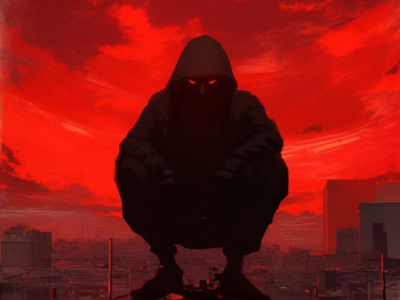

RYO-CHAN の冒険
運命が交錯する時、小さな武者犬が世界を変える
スクロールして続きを読む
↓
Episode 01
覚醒
満月が石段を照らす古い神社の夜。風化した鳥居の向こう、苔むした石畳に天から一筋の光が伸びていた。その光が照らし出したのは、そこで眠る小さな影。運命に導かれるように、一匹の犬がこの神社に迷い込み眠っていた。その名もRYOCHAN。ミニチュアシュナウザーだった。

Episode 02
歪み
東京の夜。窓からは星一つ見えない漆黒の闇が広がっていた。複数のモニターが青白い光を放つ密室。影のような人物たちがキーボードを熱心に叩いていた。彼らの姿は暗闇に溶け込み、光るモニターに照らされた指先だけが動きを見せていた。

登場人物

★★★★★
RYO-CHAN
年齢:
不明（推定2歳）
種族:
ミニチュアシュナウザー
特技:
運命感知・金融システム理解
小さな武者鎧に身を包んだ神秘的な犬。Web3の世界で重要な役割を果たす運命を背負っている。その愛らしい外見とは裏腹に、世界を変革する力を秘めている。
★★★★☆
賢者 老翁
年齢:
数百歳
職業:
古の賢者・導師
特技:
予言・古代の智恵・月読み
古から伝わる智恵を持つ謎の老人。月明かりの下でRYO-CHANに重要な啓示を与える。その杖から放たれる光は、迷いし者たちの道を照らす。
★★★☆☆
桜 ミサキ
年齢:
16歳（見た目）
職業:
神社の巫女？
特技:
花びら操作・瞬間移動
桜の花びらと共に現れる謎の少女。その正体は物語の鍵を握る重要な存在。美しく儚げな外見だが、秘められた力は計り知れない。
★★★★☆
SHADOW集団
年齢:
様々
職業:
闇のハッカー集団
特技:
システム侵入・情報操作
デジタル世界の影で暗躍する謎の組織。高度なハッキング技術を駆使し、世界の裏で糸を引く。その真の目的は謎に包まれている。

★★★★★
？？？
年齢:
不明
職業:
？？？
特技:
すべてを統制する力
すべての謎を握る最重要人物。その正体が明かされる時、物語は大きく動き出す。RYO-CHANの運命に深く関わる存在。
物語は始まったばかり
RYO-CHANの冒険に参加しよう。あなたも物語の一部となる時が来た。